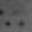
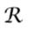
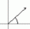
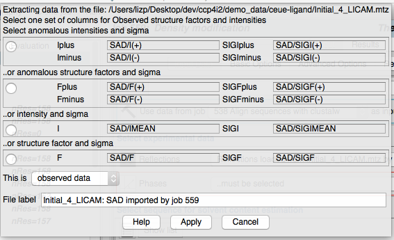
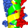
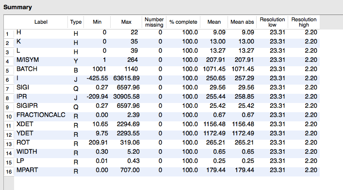

|
CCP4i2 — Experimental Data Files in CCP4i2 |
| CCP4i projects | Experimental data | Model data | Atom selection | Servers |
|---|
Experimental data
Reflections
Free R set Phases Map coefficients Within CCP4 all experimental data is saved in MTZ format files -
these can be regarded as a table with each row representing a
reflection and with a variable number of columns for experimentally
observed data (intensities and/or structure factures), phases, map
coefficients and freeR sets. The file also contains a 'header' that
holds the spacegroup, cell and other information. See the CCP4
website for details. It
is possible for a single MTZ file to contain a mixture of reflection
data, phases, map coefficients and freeR sets but within CCP4i2 we
use 'mini' MTZs containing just one set of one type of data as
explained below. The four types of
experimental data are described below. There is also a special MTZ
format for unmerged data which is described below. If you have experimental data in any alternative format you must first convert it to MTZ using the tools in the Reflection data tools module. An MTZ file can not be read as text but can be viewed with the ViewHKL program (described here) that is accessible from many places in CCP4i2. The 'reflection' data is the observed reflection intensities that come from data collection and have been scaled and merged by the Data reduction task. Reflections are required input to all the key structure solution and refinement tasks. Reflections can be in one of four representations as either intensities or structure factors and either Freidel pairs (usually called 'I(+)I(-)' for intensities or 'F(+)F(-)' for structure factors) or the averaged Imean or Fmean. The richest form from which all other can be derived is the intensity Freidel pairs but not all programs work with this.
MTZ Files
mmCIf Files
Experimental data files
The 'Free R set' flags a small proportion of the reflections to be used in generating the 'Free R' statisitics in refinement. A Free R set is usually generated as part of the Data reduction task or the Generate a Free R set tool (in Data reduction and analysis module) can be used. The same Free R set should be used throughout one structure solution and is normally input to Refinement.
Estimated phases are first generated by refinement after molecular replacement or by experimental phasing. Some initial estimated phases are required input to tasks that are trying to improove phases or model such as Density modification and Autobuild protein and initial phases can be input to Refinement and they will be output by Refinement. Phases can be represented as Phis (angles) and FOMs (figures of merit) or as Hendrickson-Lattmann (HL) coefficients which are a set of four numbers per reflection. These two forms are inter-convertible but with some loss of information in the direction HL to Phi-FOM. We are moving towards always using the richer, Hendrickson-Lattmann representation but this may not be input or output by all programs yet.
Map coefficients consist of both structure factor and phase data that are used by graphics programs, Coot or CCP4mg to generate a map. Usually the map coefficent data has been scaled to modify the map appearance and so should not be used in any other context. The Refinement task normally outputs two sets of map coefficients.
If you import data from an old-style, 'monster' MTZ which contains a variety of data you will be asked to select the required columns in the MTZ file in a window:
In this window all of the data of the required type is listed with the richest form shown first and selected by default. The selected data will be copied to a mini MTZ that is then available for use throughout CCP4i2. The window also has the option to enter the type of data (observed, derived or reference data for reflections) and the label for the data.
mmCIF is a flexible file format which can contain model coordinates, experimental data or other data. Each element of data in the file is tagged and the generally recognised tags are specified in dictionaries. The format is used by the major structure databases (wwPDB, RCSB PDBe and PDBj) to distribute data and also used by CCP4 for the small molecule 'library' that specifies the ideal molecule geometry.
The files can be viewed as text and can be viewed in CCP4i2 using the appropriate tools for the type of data.
Within CCP4i2 an mmCIF file containing model coordinates can be read by the coordinate widget the same as the alternative PDB format. All CCP4i2 tasks will work with either PDB or MMCIF coordinate files.
An mmCIF file containing experimental data must be explicitly imported by the Convert merged reflections to MTZ task in the Reflection data tools module of the task menu.
The standard CCP4 file for unmerged data is a spacial case of the MTZ file. It is produced by Mosflm, Dials or other data processing programs from the experimental images and is input to the Data reduction pipeline for conversion into merged MTZ data files. The unmerged MTZ can be viewed in ViewHKL that shows a summary of the columns in the file:
***Discussion on unmerged file content
***Other unmerged formats
A map file contains a 3D grid of calculated electron density values usually for just the assymmetric unit (the unique fraction of the unit cell). They are usually large files and CCP4i2 does not normally create or keep electron density map files but instead uses map coefficient files that contain the structure factors and phases necessary to calculate a map which is calculated as needed in display (Coot or CCP4mg) or fitting programs. The exceptions are the Calculate map coefficients task which is a flexible interface for creating unusual maps which might be viewed in the display programs.
CCP4i2 only deals with the CCP4 map file format (extension .map) and to import electron density maps you should convert structure factors and phases to MTZ format.
Traditionally a single 'monster' MTZ file contained many columns with a mixture of types of data. CCP4 programs that output MTZ files carried over all of the data from an input MTZ file to the output MTZ file. In the past, when running programs from scripts, this made handling data files easier but now it has disadvantages: there is a redundancy of data that takes up disk space, it is harder for the CCP4 database to keep track of data and is less flexible for program input. But, most seriously, 'monster' MTZs also require more complex user interfaces where the user has to select the appropriate columns from the MTZ file. We are now moving to using 'mini' MTZs that put observed data in one file, FreeR flags in another and derived data such as phases and map coefficients in their own files. The user interface is simplified - you just have to select a file and CCP4i2 will deal with the columns.
Most existing CCP4 programs do not yet handle 'mini' MTZs but expect one 'monster' input MTZ. To cope with this the tasks which use many programs automatically merge mini MTZs before running a program and split the output MTZ afterwards. If you look in Project directory view of the project (on the left-hand side of a project window) you will see listed, for many jobs, the input and output merged MTZ files and log files for the mtzjoin and mtzsplit utilities that perform the conversions.